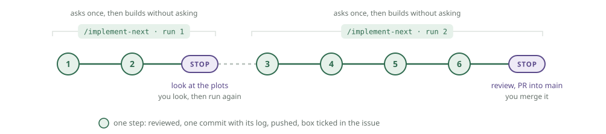
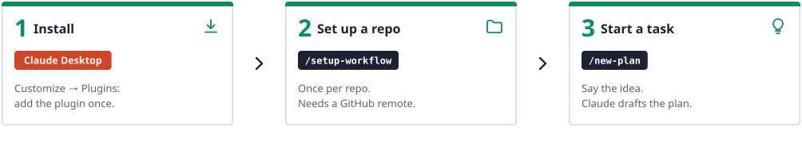

Claude skills for research repos. You plan with Claude over days, and every session picks up where the last one stopped. Claude builds the plan step by step and stops where you said you want to look.
INSTALL
In Claude Desktop, open Customize → Plugins → Add marketplace and enter:
Keep every decisionwith its reason, one grep away.
Decide where Claude stopsBetween stops, it builds alone.
Review in small piecesOne commit per step, one box per step in the GitHub issue, one PR per big step.
The life of a task
How a build runs

Each /implement-next asks once, then builds up to the next Stop in the plan (at most 5 steps). It also stops early if a test fails or a question comes up that the plan does not answer. Claude pushes the task branch after each step: allow git push in Claude Code's /permissions to skip the prompt.
Get started

Install. In Claude Desktop, open Customize → Plugins → Add marketplace and enter giulianonetto/research-workflow. Then add the research-workflow plugin (connect GitHub if asked). Turn on Sync automatically to get updates.
Set up a repo with /setup-workflow. After an update, run it again: it shows what changed.
Start a task: say the idea, then /new-plan.
Claude Code without Claude Desktop
claude plugin install research-workflow --marketplace giulianonetto/research-workflow
Commands then carry the plugin's name: /research-workflow:setup-workflow. Install it one way only, or every command appears twice.
Commands
/project-refresher
Start of a session: "where was I? what is next?"
/project-refresher tasks
All tasks with their status
/new-plan
A new task
/grill-plan
Hard questions about a draft plan
/finalize-plan
The plan is ready to build
/implement-next
Build up to the next stop
/sandbox
Check something by hand
/progress
Log work, change a status (or say "log progress")
An experiment (try something out, end in an answer) is a task too: start it with /new-plan exp, and write it up with /write-results before you close it. An example
The plan can change at any time: just say what to change. All rules live in one file in your project, plans/README.md. All past decisions:
Claude: "I'll build steps 1 and 2, then stop so you can check the model fit. OK?"
status planned → in progress
For each step, Claude reviews it, commits, pushes and ticks the box. Then it stops.
What does the review check?
For code: bugs first, then the plan step (does it do what the step says?), research checks (lost rows, missing values, units, seeds, numbers that look wrong) and style. A step that only changes text gets the plan check.
Claude also stops early if a test fails, or a question comes up that the plan does not answer.
You
Review the work, in small pieces:
Claude's summary: each step, its review, and any choice it made alone.
The commits on GitHub: one per step, small enough to read.
The result: numbers, tables, output, plots. /sandbox gives you code to check it by hand.
Then run /implement-next again. If the plan is wrong, say what to change.
Day 5 · finish and close
/implement-next
Claude builds steps 3 and 4. At the last stop, it reviews the whole branch and opens the PR into main, with "Closes #41".
You
Review the PR and merge it.
/progress
You: "merged, mark done"
status in progress → done
How the work lands on GitHub
The hurdle-model task has four steps. Step 3 is big.
One taskone issue, one branch.
One stepone box in the issue, one commit, pushed. Claude ticks the box.
A big stepmore than about 400 lines of code, or unrelated parts of the code. It gets a sub-issue, its own branch, one commit per sub-step, and a PR into the task branch.
The endone PR into main. Its "Closes #41" closes the issue when you merge.
Other ways to start
A new repo
Nothing exists yet.
YouCreate the repo on GitHub first. Every task has an issue, so the workflow needs a GitHub remote.
gh repo create sim-bench --private --clone
/setup-workflowClaude asks two questions (the project in one line, your tools), shows the files, and makes one commit. It does not push.
/new-planYour first task, as in the story.
The folder after setup
sim-bench/
├── CLAUDE.md + read plans/README.md first
├── README.md + a short workflow section
├── PROGRESS.md the folder log
├── plans/README.md all the rules
└── .gitignore tmp/ ignored
An issue that is already open
Issue #27 exists. Maybe someone else wrote it.
/new-planSay "/new-plan for issue #27". Claude reads the issue and its comments. The goal comes from the issue; open points become open questions.
/finalize-planif it is small and clearGo straight to finalize, in the same session. Otherwise, shape it first, as in the story.
Back after a week
A draft is waiting, and you forgot where you were.
/project-refresherIt shows where you stopped and the next step. Add detailed to also see the open questions and the last decisions.
YouGo on as in day 2 of the story. Run /progress before you stop.
A new question after the plan is final?
Claude asks once: "Keep the status, or go back to drafting?" Both answers are fine. A change to an agreed plan is logged with a (plan change) tag.
An experiment
Try something out, and end with an answer.
/new-plan expThe plan gets objectives instead of a goal. The task folder gets experiment/run.sh, results/, RESULTS.md and analysis.qmd.
YouWork any way you like. When a part settles, it becomes a stage in run.sh.
/write-resultsClaude writes it up from the outputs and the log. Go round as often as you like; you mark each section reviewed.
/progress"mark done" checks that nothing is missing. Always merge, even when the answer is no.
run.sh, explained
You only edit the middle part. Each stage is a name, then (), then the commands you would type, in { }:
simulate() {
Rscript simulate.R "$OUT/sim" # big output
}
summarize() {
Rscript summarize.R "$OUT/sim" "$RES" # small tables and figures
}
./run.sh lists the stages. ./run.sh simulate summarize runs two, in order.
Every run adds the commit, the computer and the stages to $OUT/run-info.log. RESULTS.md uses it.
Which outputs go to git?
The folder decides, not the size:
$RES = plans/<task>/results/ in git: what RESULTS.md shows
$OUT = tmp/experiments/<task>/ not in git: everything else
On a cluster, set OUT=/scratch/....
Stopping without an answer?
Tell /progress "drop it". You write a short RESULTS.md: what you tried, what you saw, why you stopped. The status becomes dropped, and the folder is still merged.
What it writes in a project
your-project/
├── CLAUDE.md + a short workflow section
├── README.md + a short workflow section
├── PROGRESS.md the folder log: active tasks, status changes, PRs, releases
└── plans/
├── README.md all the rules
└── <task>/
├── PLAN.md the plan: Goal, steps, stops
├── PROGRESS.md the task log: work, DECISION lines, Next
└── sandbox/ code for you to run and look at
![The life of a task: start a plan, shape it, finalize it, build it in runs, close it. The draft lives in tmp/ until you approve it, then moves to plans/ on a task branch, linked from the issue. Finalize checks that every step is ready to build (one commit, or sub-steps) and becomes planned only after you approve the plan and its stops. Claude reviews each step before its commit and the whole branch before the PR; you review and merge the PR. Under each stage: what you do and what you see on GitHub. Every session starts with /project-refresher and ends with /progress. Record keeping: PROGRESS.md at the root, the folder log (one per project), logs active tasks, status changes, PRs and releases; plans/<task>/PROGRESS.md, the task log (one per task), logs the work of each step, its DECISION lines and what is next. Any time: /sandbox to check by hand, or change the plan.](img/flow-dark.svg)